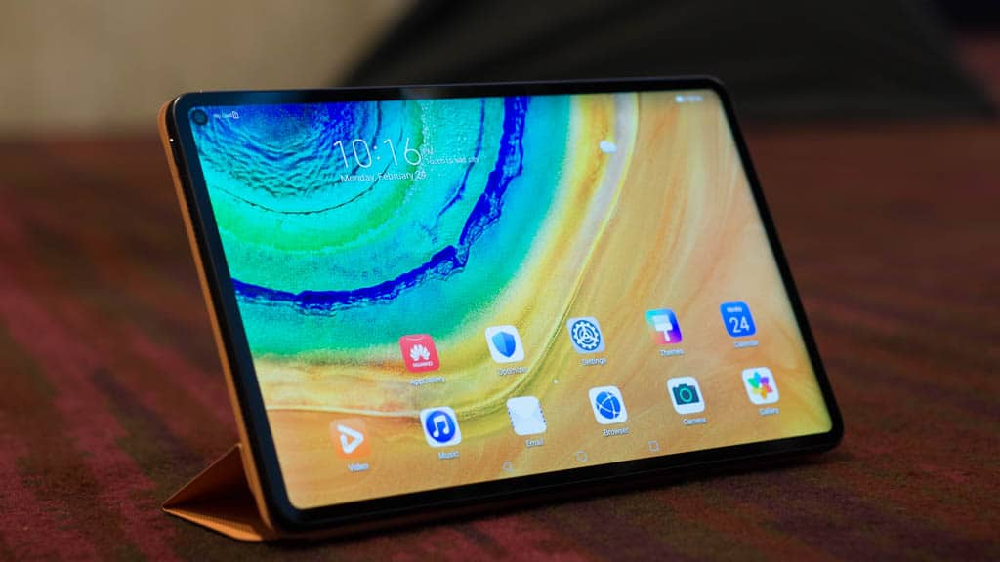
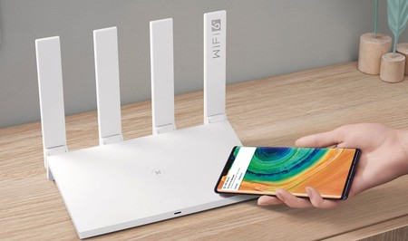
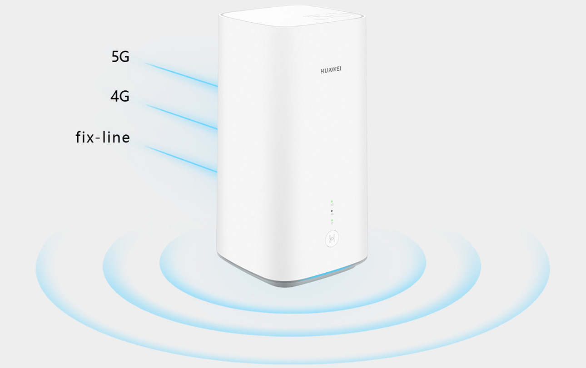

|
HUAWEI MATE XsLe HUAWEI Mate Xs offre une expérience utilisateur améliorée grâce à un nouvel écran flexible fabriqué avec des matériaux nouveaux et une nouvelle charnière qui parachève le design caractéristique en « aile de faucon » (Falcon Wing). Equipé du système sur puce pour la 5G, Kirin 990 5G, développé en interne par Huawei, le HUAWEI Mate Xs est une nouvelle version complète qui offre des capacités de communication mobiles améliorées en matière d'IA et de 5G. |
|  |
HUAWEI MATEPAD PRO 5GLe HUAWEI MatePad Pro 5G est doté d'un écran HD de 10,8 pouces qui prend en charge la gamme de couleurs DCI-P3 de qualité cinéma. Doté d'un cadre ultra fin, il présente le rapport écran/corps de tablette le plus élevé au monde, à savoir 90 pour cent. Intégré dans le corps de la tablette légère, le système sur puce Kirin 990 5G prend en charge une connectivité 5G exceptionnelle, tout en offrant des performances et une efficacité énergétique élevées. |
|  |
WIFI AXE 3La nouvelle série HUAWEI Wi-Fi AX3 est équipée du jeu de puces Gigahome 650, qui lui permet de prendre en charge le fonctionnement double simultané à double simultané (DBDC) à des vitesses allant jusqu'à 3 000 Mbps. Lorsqu'ils sont utilisés avec un dispositif Huawei qui prend également en charge le Wi-Fi 6+, les routeurs HUAWEI Wi-Fi AX3 peuvent offrir une meilleure couverture du signal et des vitesses dépassant celles des routeurs Wi-Fi 6. |
|  |
HUAWEI 5G CPE Pro 2le HUAWEI 5G CPE Pro 2, un nouveau CPE Wi-Fi 6+ qui est 30 pour cent plus compact que la version précédente. Parmi les autres améliorations notables, citons la prise en charge à hauteur de 11 bandes 5G et la technologie exclusive Super Uplink de Huawei, qui améliore considérablement la vitesse de téléchargement (upload) et la latence. |